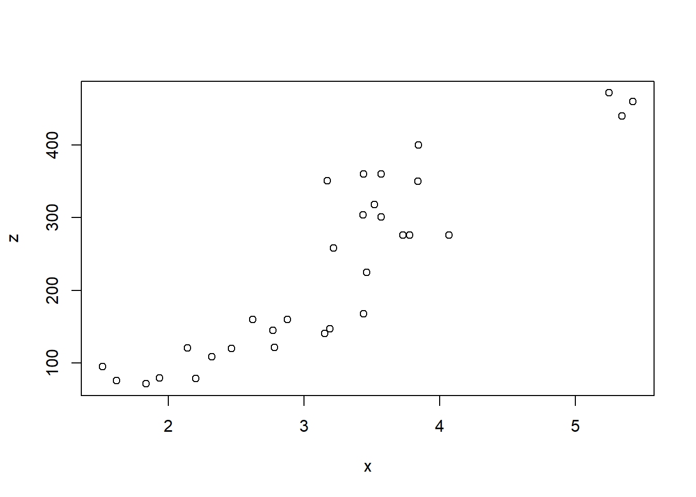

```{r}
#| lightbox:
#| group: nom_groupe
# programme R
```10 Format HTML
- Pour les notebooks/articles et les présentations.
- Notebook/articles:
format: html. - Présentation:
format: revealjs.
- Notebook/articles:
Contenu dynamique donc plus d’options, certaines un peu gadgets (surtout revealjs) .
Par défaut output en deux parties:
- le document final: .qmd .html.
- Répertoires de fichiers associés: .css, .js, ….
- Possibilité de passer sur un output en un seul fichier.
10.1 Fonctionnalités communes article et présentation
10.1.1 Fichiers de sortie
Pour le notebook/article et les présentations revealsjs, par défaut l’output est composé du fichier html, et d’un répertoire contenant des fichiers associées de type css, scss ou javascript. Cela permet d’avoir un fichier html pesant moins lourd. A savoir tout de même que si l’on souhaite transmettre un document par mail, le repertoire associé doit être également inclus aux pièces jointes. Il est donc conseillé de le compresser avant l’envoi.
Le nom du répertoire contenant tous les styles et fonctionnalité associées est nom_qmd-files.
Si l’on souhaite un fichier html unique.
- Deux options:
self-contained: true/false.embed-ressources: true/false.
- Par défaut
falsepour les deux. La documentation actuelle, recommande d’utiliser l’option `embed-ressources , en particulier pour les présentations revealjs.
10.1.2 Lightbox: agrandissement des images/graphiques
L’option Star de Quarto.
Jusqu’à la version 1.35 cette option était sous forme d’extension à installer à chaque nouveau document ou projet. Cette option a été pleinement intégrée au logiciel avec la v1.4.
Permet d’afficher une image/graphique dans une fenêtre autonome.
Facilite une mise en page sous forme de vignettes, et donc d’aggrandir les images.
On peut grouper différentes images et naviguer entre elles lorsqu’elles sont aggrandies.
Avertissement
En forme de vignettes (Section 15.3), si on prévoit une compilation non dynamique (pdf, docx, beamer, powerpoint) il faudra conditionner la mise en page des images selon le format de sortie pour que le format statique ne reporte pas les images dans des tailles trop petites, donc illisibles (Section 12.2.2).
Dans le yaml
Pour tout le document:
- Par défaut:
lightbox: false. - Pour l’activer:
lightbox: true.
Dans le bloc de code
Appliquée individuellement à une image avec une classe css
Janvier 2024: .no-lightbox ou .nolightbox pour une image
la documentation Quarto indique que l’option de désactivisation est
{.no-lightbox}. Chez moi cela ne fonctionne pas.Cela fonctionne avec l’option
{.nolightbox} qui est le nom directement hérité de l’extension externe, devenue caduque.
- Si dans le yaml, l’option est activée, on peut la désactiver individuellement avec
{.nolightbox}appliquée diretement à l’image:{.nolightbox}.
Pour ce support, elle est activée par défaut. Pour désactivée la première image (chapitre installation de Quarto et gestion des fichiers):
{.nolightbox}
{.nolightbox}Appliquée lightbox à tous les graphiques générées dans un bloc
- En option du bloc de code. On utilise l’option:
#| lightbox: true/false
Si on veut désactiver l’option pour les deux graphiques suivant.
```{r}
#| lightbox: false
#| layout-ncol: 2
data("mtcars")
x <- mtcars$wt
y <- mtcars$mpg
z <- mtcars$disp
plot(x, y)
plot(x, z)
```

Grouper des images
- Option très intéressante qui permet de naviguer entre une série d’images
- Dans l’image ouverte, l’option est activée lorsque > (avancer) et < (retour) apparaissent clairement à gauche et à droite.
- L’option pour associer des images et naviguer entre elles est `group=“nom_groupe”
::: {.panel-tabset}
10.1.2.1 Images insérées en markdown
On ajoute l’option {group="nom_groupe"} à l’image insérée
{group="groupe1"}
{group="groupe1"}

10.1.2.2 Graphiques générés dans un programme
On ajout à l’option #| lightbox, la sous option #| group="nom_groupe.
```{r}
#| layout-ncol: 2
#| lightbox:
#| group: "scatter plot"
data("mtcars")
x <- mtcars$wt
y <- mtcars$mpg
z <- mtcars$disp
plot(x, y)
plot(x, z)
```

10.1.3 Onglets
- Les sections sous forme d’onglets ont été introduits très tôt dans Rmarkdown. Ce n’est donc pas une nouveauté.
- Nouveauté Quarto: Si plusieurs sections à onglets on les mêmes entrées il est possible de caler toutes les sections sur une même entrée tout au long du document.
Exemple: on a plusieurs sections sous forme d’onglets avec chacune une section R, Stata et Python. Par défaut l’onglet R sera la première visible. Si on se met sur l’ongle Python, toutes les autres sections d’onglets se mettront par défaut Python.
Syntaxe de base:
- Dans une section div (
:::), on ajoute la classe css{.panel-tabset}. - On peut ajouter une couleur de fond aux onglets avec la classe
.nav-pills.
::: {.panel-tabset}
## Titre onglet 1
Contenu onglet 1
## Titre onglet 2
Contenu onglet 2
:::Donne:
Contenu onglet 1
Contenu onglet 2
Synchronisation des onglets:
- On ajoute seulement l’option
group="nom_group"à toutes les sections sous forme d’onglets.
::: {.panel-tabset group="nom_group" }
## Titre onglet 1
Contenu onglet 1
## Titre onglet 2
Contenu onglet 2
:::Exemple:
Les deux sections d’onglets sont reliés de la façon suivante:
::: {.panel-tabset group="lang" }Courbes de séjour Kaplan-Meier
ods exclude Lifetest.Stratum1.ProductLimitEstimates;
proc lifetest data=trans;
time stime*died(0); run;Package survival
library(survival)
fit <- survfit(Surv(stime, died) ~ 1, data = trans)
fit
summary(fit)
plot(fit)stset stime, f(died)
stci, p(75)
stci
stci, p(25)
sts graphPackage statmodels
import matplotlib.pyplot as plt
import statsmodels as sm
km = sm.SurvfuncRight(trans["stime"], trans["died"])
km.summary()Modèle semi-paramétrique Cox
proc phreg data=trans;
model stime*died(0) = year age surgery /TIES=EFRON ;
run;coxfit = coxph(formula = Surv(stime, died) ~ year + age + surgery, data = trans)
summary(coxfit)stcox year age surgery, nolog noshow efronPackage statmodels
mod = smf.phreg("stime ~ year + age + surgery ",trans, status='died', ties="efron")
rslt = mod.fit()
print(rslt.summary())10.2 Fonctionnalités propres à un notebook/article
Quelques options sont spécifiques à un contenu de type page html, et donc absente du format revealjs.
10.2.1 Langues, résumé et description
10.2.1.1 Langues
- Quarto donne la possibilité de choisir une langue qui va s’appliquer au titres de certaines métadonnées du document: auteur, résumé, sommaire….
- Sans surprise l’anglais est la langue par défaut.
Si on souhaite changer la langue du titre: lang: langue [Liste des langues].
Par exemple, si on veut passer en français: dans le yamllang: fr.
{kind=link}
{kind=link}
Si ces traductions ne conviennent pas, on peut choisir. Par exemple: * toc-title: “XXXX” * author-title: “XXXX”
Dans le yaml, en enlevant l’option lang:fr:
---
title: "Changement de la langue avec option titre"
author:
name: "Bidibule"
format:
html: default
toc: true
abstract: |
Résumé de mon document
toc-title: "SOMMAIRE"
author-title: "AUTRICE"
abstract-title: "SYNTHESE"
---10.2.1.2 Résumé et description
- Syntaxe un peu particulière:
- Une barre verticale est insérée après le nom de l’option.
- Le résumé ou la description est sur la ligne suivante avec avec au moins un espace.
- On ne peut pas mettre simultanément un résumé et une description.
- Différence entre les deux? Un résumé à un titre, par défaut ABSTRACT.
- Option pour un résumé:
abstract: | - Option pour une description:
description: |
---
abstract: |
Résumé de mon document
------
description: |
Description de mon document
---10.2.1.3 Modification du grid de la page
- Un document html comprend 3 colonnes:
- A gauche la sidebard. Vide dans un document simple, elle permet de mettre un menu ou un chapitrage pour des contenus de type website ou book. Cette colonne renverra donc vers d’autres document .qmd
- Au centre le body qui comprend le contenu du document.
- A droite la margin qui comprendra la table des matières du document, éventuellement des reports d’output (graphiques/images, tableaux, notes…).
- Depuis la version 1.35 il est possible de modifier la largeur de ces trois colonnes.

- La modification du grid se fait dans le yaml avec l’option
griden sous-option du format html. - Les largeurs (maximales) des 3 colonnes de grid peuvent être modifiées avec 3 sous options. Avec les valeurs par défaut:
sidebar-width: 250pxbody-width: 800pxmargin-width: 250px
- Il y a également un espace entre les colonnes, avec une valeur commune (option
gutter-width). Toujours par défaut:gutter-width: 1.5em
Attention, ce ne sont pas des largeurs absolues mais des largeurs maximales. Selon le contenu présent dans le document ou le site web (table des matières, chapitrage ou liens dans la sidebar à gauche) les largeurs seront adaptées.
Donc dans le yaml de chaque document, on aurait donc par défaut :
---
title: "Grid par défaut"
format:
html:
grid:
sidebar-width: 250px
body-width: 800px
margin-width: 250px
gutter-width: 1.5em
---Si on veut modifier les valeurs maximales largeurs, par exemple en baissant celle de la colonne de gauche (vide), et en augmentant celle des deux autres, tout en ajoutant une table des matières à droite et en sachant qu’il n’y a pas de contenu dans la colonne de gauche (sidebar):
---
title: "Modification du grid"
format:
html:
grid:
sidebar-width: 20px
body-width: 1200px
margin-width: 550px
gutter-width: 1.5em
toc: true
---{kind=link}
{kind=link}
10.2.2 Thèmes
Juste une courte introduction, on abordera pas ici directement la question des fichiers .css et .scss ([#sec-scss]).
Ils peuvent néanmoins être créés et utilisés pour modifier un thème sélectionné.
- Quarto comme Rmarkdown utilise les thèmes de type html bootstrap et plus particulièrement les 26 proposée gratuitement par le site: bootswatch.
- Le thème bootstrap html5 (défaut).
- Les 25 thèmes gratuits par bootswatch.
- On peut visualiser les rendus des différents thèmes. Par exemple le theme vapor.
- Tous les fichiers css sont disponibles et téléchargeables, ce qui facilite une customisation du thème choisi via des éléments css ou des variables SAS (scss).
- En nombre limité, des extensions proposent des thèmes : bookup de Julien Barnier, thème institutionnel de l’INRAE…
Visualisation des thèmes
Le thème par défaut est default html 5 Lien.
Syntaxe
On change le thème en sous option de celle du format html avec theme: nom_theme.
---
title: "Changement theme"
format:
html:
theme: nom_theme
---{kind=link}
{kind=link}
10.3 Présentation revealjs
Remplace deux formats de présentation html de Rmarkdown.
Beaucoup d’options, plus ou moins gadget.
Voir court support qui reprend les élements qui vont suivre mais dans ce format: https://mthevenin.gitlab.io/quarto_revealjs/
10.3.1 Les blocs de code
10.3.1.1 Activer leur affichage
Par défaut les codes ne sont pas affichés:
Pour les afficher par défaut, renseigner dans le yaml :
echo: trueoucode-fold: true.Ou jouer avec ces deux options dans chaque bloc individuellement.
10.3.1.2 Line highlight
- Options qui permet de mettre en avant une ou plusieurs lignes d’un programme dans un bloc et de naviguer entre ces lignes.
- Option
code-line-numbers: "n°_lignes"
```{r}
#| code-lines-numbers: "choix ligne(s)"
# programme
```- Par exemple:
- “2” ligne 2.
- “2,5” lignes 2 et 5.
- “2-5” lignes 2 à 5.
- “|2|4” toutes les lignes, puis ligne 2, puis ligne 4
```{r}
#| eval: false
#| code-line-numbers: "|1|4|6"
data("mtcars")
x <- mtcars$wt
y <- mtcars$mpg
plot(x, y)
z <- mtcars$disp
plot(x, z)
```Donne la séquence suivante:
{kind=link}
{kind=link}
{kind=link}
{kind=link}
10.3.1.3 Code animation
- Permet d’afficher un programme par bloc successif.
- Chaque bloc est généré dans une slide.
- Pour un bon rendu, le bloc doit être sur la même ligne sur chaque slide. Important.
- Pour réaliser cette animation on utilise dans le titre des slide, l’option
{auto-animate: "true"}:## Titre slides {auto-animate: "true"}
{kind=link}
10.3.2 Eléments d’affichage et de mise en page
10.3.2.1 Liens
L’affichage du contenu d’un lien est insérée dans la présentation, mais avec la possibilité de fermer directement la page ouverte (croix en haut à droite) et d’ouvrir le lien dans un onglet différent.
Dans le yaml, on active cette option avec
preview-links: true. Je conseille cette activation si la présentation comporte des liens externes.
10.3.2.2 Affichage incrémental des éléments d’une liste
Option incremental
- Dans le yaml on peut l’activer pour toutes les listes:
---
format:
revealjs:
incremental: true
---- Dans chaque liste on peut l’activer ou la désactiver avec une classe css:
- activation:
::: {.incremental} - désactivation:
::: {.nonincremental}
- activation:
::: {.incremental}
* ligne 1
* ligne 2
* ligne 3
:::10.3.2.3 Affichage dynamique d’une liste
- On peut ajouter un effet aux éléments d’une liste qui apparaissent de manière successive avec la classe css
{.fragment option}. On lui ajoute une autre classe css selon l’effet recherché, par exemple:{.fragment .fade-up}{.fragment .fade-left}
10.3.2.4 Réduction l’affichage du texte
- Dans le titre de la slide, on introduit la classe css
{.smaller} - Par exemple:
## Réduire la taille d'affichage d'une slide {.smaller}
- Sera également appliqué aux blocs de code.
{kind=link}
{kind=link}
10.3.2.5 Dépasser la limite verticale des slides
- Option très pratique.
- On peut contourner la limite verticale des slides en faisant défiler son contenu vers le bas.
- Dans le yaml de la présentation, on utilise l’option
scrollable: trueen sous option du format revealjs
format:
revealjs:
scrollable: true10.3.2.6 Faciliter la mise en page d’une slide
Plusieurs possibilités:
- Utiliser des onglets:
{.panel-tabset}(Section 10.1.3)- Un programme et son output dans une même slide:
::: {.panel-tabset}
### Programme
<progamme>
### output
<output: graphique, tableau de résultat, extrait base de données>
:::- Utiliser un affichage en 2 colonnes:
{.columns}et{.column}(Section 3.2.1.2)- Par exemple deux listes:
:::: {.columns}
::: {.column width="50%"}
* item11
* item12
* item13
:::
::: {.column width="50%"}
* item21
* item22
* item23
:::
::::- Utiliser l’option
#| output-location: option- En option du bloc de code.
- Adapté à une mise en page avec report du programme et de son output.
- Plusieurs options:
column: à droite.fragment: en dessous avec touche .column-fragment: à droite avec touche [la meilleure à mon sens].slide: slide suivante
```{r}
#| eval: false
#| output-location: column-fragment
data("mtcars")
x <- mtcars$wt
y <- mtcars$mpg
plot(x, y)
```{kind=link}
{kind=link}
10.3.2.7 Thème et couleur du fond
- Thème:
- Comme pour un document ou website html, plusieurs thèmes disponibles. [Lien].
- On peut les modifier en associant un .css et/scss au fichier qmd.
- Si on choisit le thème dark, fans le yaml:
---
format:
revealjs:
theme: dark
--- - Changement de la couleur de fond s’une slide:
Au titre de la slide ajouter:{background-color=couleur}- Un code hexadécimal.
- Une couleur css prédéfinie [lien: liste nom couleur css dans couleur nommée]].
Exemple avec code hexadécimal ou nom css pour une même couleur:
## Titre slide {background-color="darkturquoise"}.## Titre slide {background-color=#00CED1}.
10.3.2.8 Divers
- Plusieurs options dans le titre de la slide:
- Les ajouter dans une même accolade.
- {.smaller} + {background color..} =>
## Titre {.smaller background-color=#00CED1 }.
- Ajouter des numéros aux slides
- Dans le yaml, ajouter l’option
slide-number:true
- Dans le yaml, ajouter l’option